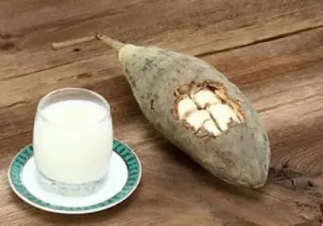

Élixirs naturels · 5 min de lecture
Élixir au Baobab : le rituel ancestral pour reminéraliser le corps, soutenir l’immunité et revitaliser l’énergie naturelle

Introduction
Surnommé l’arbre de vie, le baobab nourrit les peuples africains depuis des siècles. Son fruit, naturellement séché au soleil, est l’un des aliments les plus riches et les plus complets de la nature. Il concentre fibres, vitamine C, minéraux et antioxydants dans une forme parfaitement assimilable par l’organisme.
À une époque où l’alimentation moderne appauvrit le corps et fatigue le système digestif, le baobab s’impose comme un super-aliment de fond, capable de nourrir sans agresser et de renforcer sans stimuler artificiellement.
Dans cet article, je te présente un élixir naturel à base de baobab, formulé avec une synergie d’ingrédients soigneusement choisis afin de créer une alchimie optimale pour la santé, la digestion, l’immunité et la vitalité globale.
👉 Je tiens à vous rappeler une règle d’or que j’aime beaucoup et qui guide mes choix au quotidien : si la nature ne l’a pas créé, ne le buvez pas.
Le problème
Beaucoup de personnes souffrent aujourd’hui de :
fatigue persistante,
digestion lente ou inconfortable,
immunité affaiblie,
carences en fibres et minéraux,
énergie instable dans la journée.
Ces déséquilibres sont souvent liés à une alimentation trop transformée et pauvre en nutriments vivants.
Le corps n’a pas besoin de plus de stimulants.
Il a besoin de densité nutritionnelle et de régularité.
La promesse
L’élixir au baobab agit comme un nourrissant global et reminéralisant naturel.
Il soutient la digestion, renforce l’immunité, stabilise l’énergie et nourrit les cellules en profondeur, sans créer de pics ni de fatigue secondaire.
Ce n’est pas un complément agressif.
C’est un allié quotidien de vitalité durable.
Les bénéfices
Une énergie plus stable et naturelle
Une digestion plus fluide
Un soutien puissant de l’immunité
Une reminéralisation progressive du corps
Une meilleure résistance à la fatigue
🌿 Pourquoi ce remède est efficace
Le baobab est exceptionnellement riche en :
vitamine C naturelle (hautement biodisponible),
fibres solubles et insolubles,
calcium, potassium, magnésium,
antioxydants protecteurs.
Sa particularité est de nourrir à la fois le microbiote intestinal et les cellules.
Les fibres soutiennent la flore, tandis que les micronutriments renforcent l’immunité et l’énergie cellulaire.
Associé à des ingrédients comme l’eau de coco, le gingembre doux et la poire, le baobab devient encore plus digestible et parfaitement équilibré pour une consommation régulière.
👉 Il nourrit sans alourdir, renforce sans exciter.
💪 Les bienfaits de l’élixir au baobab
Renforcement naturel de l’immunité
Grâce à sa vitamine C naturelle et à ses antioxydants.Soutien de la digestion et du transit
Les fibres nourrissent le microbiote et facilitent l’élimination.Énergie durable
Pas de pic, pas de chute : une vitalité stable.Reminéralisation progressive
Soutient les os, les muscles et le système nerveux.Action anti-fatigue globale
Idéal en période de stress ou de récupération.
🍐 La recette de l’Élixir Vitalité & Immunité au Baobab
Ingrédients (alchimie optimale)
1 cuillère à soupe de poudre de baobab (bio)
250 ml d’eau de coco naturelle
½ poire mûre (fraîche ou légèrement cuite)
Une pincée de gingembre frais râpé
Un filet de jus de citron vert
1 cuillère à café de graines de courge moulues (optionnel)
Pourquoi cette synergie fonctionne ?
Le baobab nourrit et protège.
L’eau de coco hydrate et reminéralise.
La poire adoucit la digestion.
Le gingembre stimule l’assimilation.
Le citron vert renforce l’immunité.
Les graines de courge apportent zinc et soutien immunitaire.
Préparation
Place tous les ingrédients dans un blender.
Mixe jusqu’à obtenir une texture lisse.
Bois immédiatement pour profiter des nutriments vivants.
⏰ Comment l’utiliser
À consommer 1 fois par jour, idéalement :
le matin,
ou en collation revitalisante.
Peut être utilisé en cure de 3 à 4 semaines, ou intégré à une routine quotidienne.
Convient très bien aux périodes de fatigue ou de changement de saison.
👥 À qui s’adresse ce rituel
Aux personnes fatiguées ou carencées
À ceux qui ont une digestion sensible
Aux personnes souhaitant renforcer leur immunité
Aux sportifs et personnes actives
À toute personne cherchant une nutrition simple, naturelle et complète
⚠️ Précautions
Commence par de petites quantités si tu découvres le baobab.
Choisis une poudre pure, bio et sans additifs.
Bois suffisamment d’eau dans la journée.
En cas de traitement médical spécifique, demande conseil à un professionnel de santé.
🌱 Conclusion & appel à l’action
L’élixir au baobab est un retour à la nutrition essentielle.
Il rappelle que la vraie énergie ne vient pas de la stimulation, mais de la richesse intérieure du vivant.
C’est un rituel simple, ancestral et profondément nourrissant, pour celles et ceux qui veulent bâtir une vitalité durable et consciente.
👉 Si la nature ne l’a pas créé, ne le buvez pas.
Je partage régulièrement des élixirs, rituels et ressources bien-être pour t’aider à renforcer ton corps, ton énergie et ton immunité naturellement.
📚 Je suis auteur bien-être sous le pseudo Chest0 JM.S., mes ouvrages sont disponibles sur Amazon.
🔗 Retrouve tout mon univers ici :
👉 https://chest0.fr
👉 Si tu veux aller plus loin, découvre aussi notre
« Travail assis : pauses actives »
👉 Créez votre planning de pauses gratuit : chest0.fr/outils/pauses-actives/
« Journal du sommeil »
👉 Tenez votre journal du sommeil sur 7 jours, gratuitement : chest0.fr/outils/journal-sommeil/
« Les 20 aliments des centenaires » et « Microbiote intestinal »
👉 Mes livres de recettes naturelles, élixirs et détox : chest0.fr/pages/livres.html
« 4 habitudes à observer au quotidien »
👉 Faites le point sur vos habitudes avec l'outil gratuit : chest0.fr/outils/equilibre-quotidien/
Plus de 40 recettes d'élixirs dans les livres Chest0.
Voir les livres